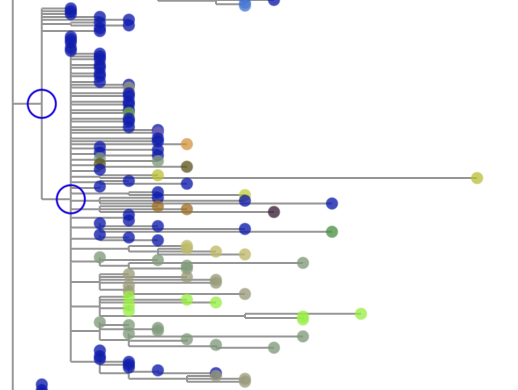
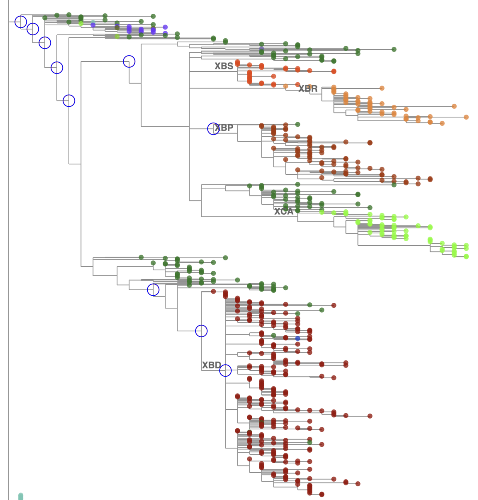
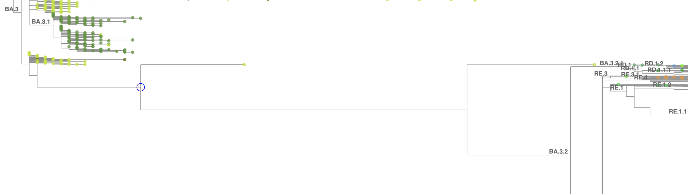
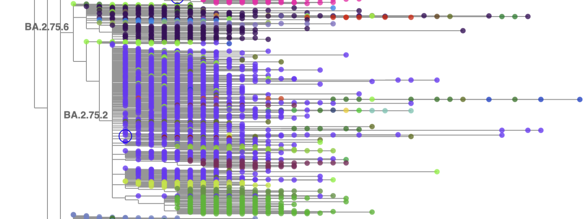
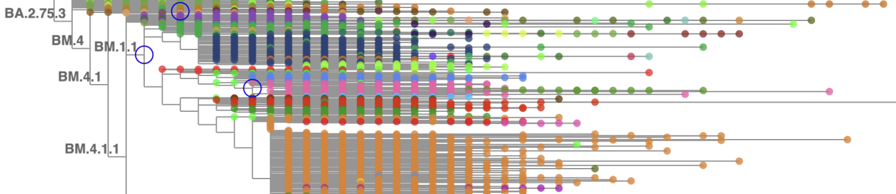

Inspecting the Tree in Taxonium¶
Getting started with Taxonium¶
Installing the Taxonium app¶
The web version of taxonium may run into memory limits when trying to display very large trees
such as the SARS-CoV-2 tree. Instead, use the local app version of Taxonium.
Installation instructions are here.
MacOS users, pay special attention to the Note with the xattr command.
Downloading the tree file for viewing¶
The daily update pipeline generates a Taxonium file for the full tree. To download that file
to your computer for viewing, assuming you have SSH access to hgwdev (or another
internet-accessible machine with access to the filesystem on which the pipeline runs),
you can use scp like this (after today's build has completed):
today=$(date +%F)
scp hgwdev:/path/to/sarscov2phylo/$today/gisaidAndPublic.$today.masked.taxonium.jsonl.gz .
Loading the tree¶
Start the Taxonium app. Either drag the downloaded .jsonl.gz file onto the center window, or click the 'Open File' button and select the file. Taxonium will get to work digesting the file with progress messages, and then display the tree.
I always tweak a few settings after starting Taxonium:
- Click the settings (gear) icon along the bottom of the tree image pane. Check the checkbox by "Nucleotide" to see nucleotide substitutions (not only Amino acid). Click into the Appearance tab and change "Max clade labels to show" from its default 10 to 100. Click somewhere outside of the Settings window to close it.
- Click the "Zoom in horizontally" button (magnifying glass with left-right arrow) until the horizontal width of a single substitution looks good to you (for me, with the SARS-CoV-2 tree, that's 3 clicks).
- Change the default search from Name to something else and then change it back again, so that
the checkboxes labeled 'x' (exact match) and 'm' (multiple matches) appear. Check the 'm'
checkbox so that you can paste in collections of complete sequence names (generally extracted
by commands/pipes that include greps in the build output file
samples.$today), for example to highlight and zoom to a newly designated lineage. - I also click 'Add a new search' and choose Revertant, to highlight branches with reversions. The default is 'with at least [ 0 ] descendants' which applies to so many branches and sequences that it's a little overwhelming, so I change it to something like 4 when annotating new lineages or 100 when looking for reversions causing major trouble in a large lineage.
Cascading reversion branches¶
It's very common for a new variant that sweeps to prominence to have a significant number of new mutations, especially in Spike, and unfortunately it's common for those to interfere with the binding of primers in some commonly used amplicon scheme, causing amplicon dropout. When that happens, and especially when there is low-level contamination during sequencing by some other lineage that does not have the new mutations, it is common for reference bases to be called in the consensus sequence in the affected amplicon(s) instead of the new mutations that the virus most likely has. This happened in Delta especially at position 21987 (but others as well), and in every wave of Omicron variants.
When multiple sequences have apparent reversions to the reference base at the same position, maximum parsimony groups them together and forms branches with reversions, often attached to the main polytomy of a large lineage. When a sequence is affected by one reversion, it's often affected by more than one reversion, so branches with cascading reversions can form. The significant parsimony improvement of lumping sequences together that share multiple reversions tends to attract in sequences that have the defining mutations of sublineages, causing the multiple-reversion branches to form little microcosms of the parent lineage. For example, a multiple-reversion branch in KP.3.1.1 might attract sequences that actually belong to child lineages MC.2, MC.11, MC. 16, MC.35 and others. Selecting 'Color by: [ Pangolin lineage ]' in Taxonium shows that the branch has child branches of many colors. We might call that branch a "mini-KP.3.1.1". (Thus references to "mini-Delta" etc. in old notes.)

If many sequences of a child lineage have multiple reversions in common, then the child lineage branch of the multi-reversion might start attracting sequences that don't have the reversions away from the real lineage branch (on the parent polytomy, without the reversions).
The usual way of correcting trouble caused by multi-reversion branches is to add an entry for
the parent lineage in
branchSpecificMask.yml
(see Branch-specific masking)
if it doesn't already have one,
and add the reversions that are causing trouble to its reversions list.
After that masking is applied in the next daily build, matOptimize will move the child lineage
branches from the no-longer-reverted branch into the proper child lineage branches on the parent's main polytomy.

Incomplete sequences around the base of major lineages¶
Some sequences have so much amplicon dropout and backfilling with reference sequence that they are plain old incomplete despite having a near-full length. Other sequences are chimeras from mixed infection or have widespread contamination. Such sequences often are placed around the base of a major lineage because, from a maximum parsimony point of view, they might look like intermediates between the closest identifiable ancestor branch and the new variant.

If such sequences are causing confusion or alarm in users of the tree, or attracting better sequences away from better placements, then it may be worth the effort to prune the sequences from the tree (see Pruning and re-optimization) and permanently exclude them from the build (see Manually excluding sequences).
Lineages out of order¶
BA.2.75 was plagued by not only sequence quality issues, but also recurring Spike mutations that maximum parsimony tended to lump together in ways that differed from human lineage hunters' determinations of the true branching structure and the order in which mutations occurred. For example, BA.2.75.2 was designated early on with four defining mutations relative to BA.2.75 including S:R346T (G22599C). Later, BA.2.75.6 was defined with only one defining mutation relative to BA.2.75: S:R346T (G22599C). The maximum parsimony interpretation is to make BA.2.75.6 a child of BA.2.75 (fine) and then to make BA.2.75.2 a descendant of BA.2.75.6 because of the shared G22599C - which contradicts the Pango hierarchy (BA.2.75.2 is a child of BA.2.75 not BA.2.75.6 which is its sibling).

Forcing a move of the BA.2.75.2 branch wouldn't fix the problem because matOptimize would simply move it back to the more parsimonious (though incorrect) placement in the next daily build. Designating and annotating Pango lineages is the best way to clarify the situation.
An even more complicated situation arose with the BM.* sublineages of BA.2.75.3. BM.1.1 is placed as a child of BM.4.1.1, with a reversion, because BM.1.1's defining mutations are the same as BM.4.1's and BM.4.1.1's (but it's missing the BM.4 mutation, thus the reversion). BM.1 could have been placed as a child-with-reversion of BM.1.1 - but instead it was placed as a child of BA.2.75.7 because of its shared S:F486S (T23019C).

Again, due to using maximum parsimony and reoptimizing daily, there's no permanent way to enforce the desired branch structure. Designating and annotating Pango lineages at least leads to the correct lineage assignments for sequences.